China IIT Annual Reconciliation Explained: 2026 Playbook for Overseas Employers
Key takeaways
- Annual IIT reconciliation is both a compliance event and an employee-experience test.
- Most escalations come from data quality and communication gaps, not from tax policy novelty.
- EOR-supported employers should prepare with a pre-season checklist and a triaged support model.
- Bilingual process guidance reduces confusion and lowers support load during filing windows.
What changed—and why this matters in practice
China’s annual IIT reconciliation process remains a recurring operational requirement that interacts directly with monthly payroll quality. Even where withholding operations are broadly stable, year-end reconciliation can surface inconsistencies in allowances, special deductions, and one-off payment treatment. Foreign employers often underestimate this because monthly payroll appears “normal” until employees begin filing.
The most important insight is this: reconciliation performance is a systems outcome. It reflects payroll coding, document quality, communication design, and escalation ownership. When these elements are aligned, the filing period is manageable. When they are not, teams face avoidable stress and repeated employee trust issues.
Operational context for EOR buyers
For globally distributed teams, IIT reconciliation creates pressure at exactly the point where local compliance confidence matters most. Employees expect clear support, but employers should avoid overstepping into individualized legal/tax interpretation. This balance is achievable: provide process clarity, data transparency, and escalation pathways to qualified advisors for complex cases.
A mature EOR setup should include pre-season readiness checks, role-based support routing, and post-season issue analysis.
Scenario analysis
Scenario A: “Monthly payroll is fine, so annual filing should be easy”
Not always. Annual filing can reveal deduction-document mismatches and classification inconsistencies that were not visible in routine monthly processing.
Scenario B: “One FAQ document is enough for everyone”
Usually ineffective. Employees face different circumstances, so support design should include clear triage and practical examples.
Scenario C: “EOR owns everything”
EOR can own execution workflows, but employer governance still matters for response quality, communication tone, and escalation standards.
Action checklist for reconciliation season
1. Run pre-season data quality checks across payroll and deduction categories.
2. Publish bilingual process guidance with clear scope boundaries.
3. Define escalation pathways for complex tax-residency or interpretation questions.
4. Track support metrics: response time, resolution time, and recurring issue classes.
5. Hold post-season review and feed lessons into next cycle controls.
What to watch next
- As multinational work arrangements evolve, residency and deduction questions may become more frequent.
- Employee expectations for real-time process support are rising.
- Teams that treat reconciliation as a cross-functional program, not a payroll task, typically perform better.
FAQ
If monthly withholding is accurate, can annual reconciliation still produce adjustments?
Yes. Individual circumstances and deduction claims can change outcomes.
Should employer teams provide definitive tax advice?
Prefer process support and qualified-advisor referral for interpretation-sensitive cases.
Does EOR remove all reconciliation obligations?
No. EOR supports execution, but employer oversight and communication still matter.
What is the most common preventable failure?
Late preparation and unclear escalation ownership.
What metric best indicates readiness quality?
Pre-season data exception rate combined with in-season resolution speed.
Disclaimer
Informational only and not legal or tax advice.
Sources
- State Taxation Administration (STA): https://www.chinatax.gov.cn/
- STA IIT service references and annual reconciliation guidance
- OECD tax administration resources: https://www.oecd.org/tax/
Need local employment support in China?
If you need a compliance-first Employer of Record (EOR) partner for hiring, payroll, and risk controls in China, China-Payroll.com can help your team evaluate the right setup.
Image Prompt Pack
Create a 16:9 hero image for article title: 'China IIT Annual Reconciliation Explained: 2026 Playbook for Overseas Employers'. Scene: tax season preparation desk with multilingual guidance materials and payroll analytics dashboard. Include motifs: calculator, …